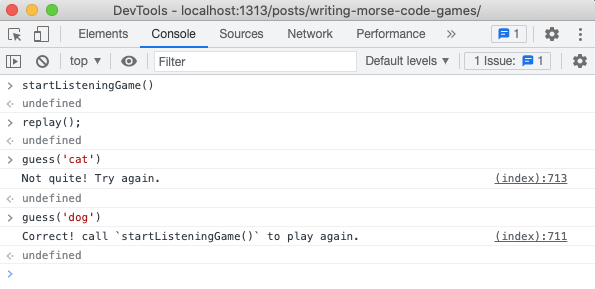
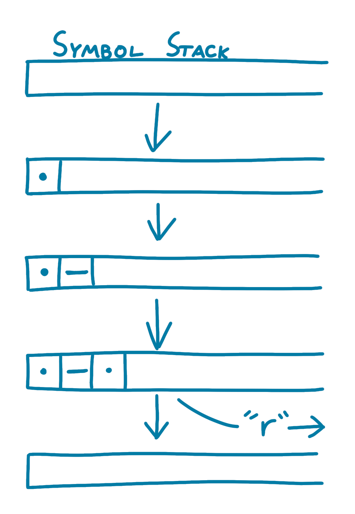
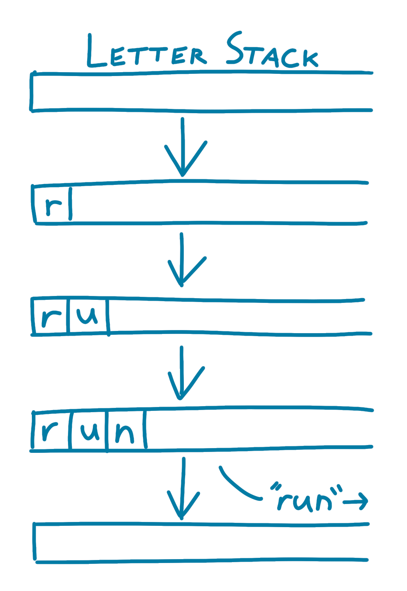
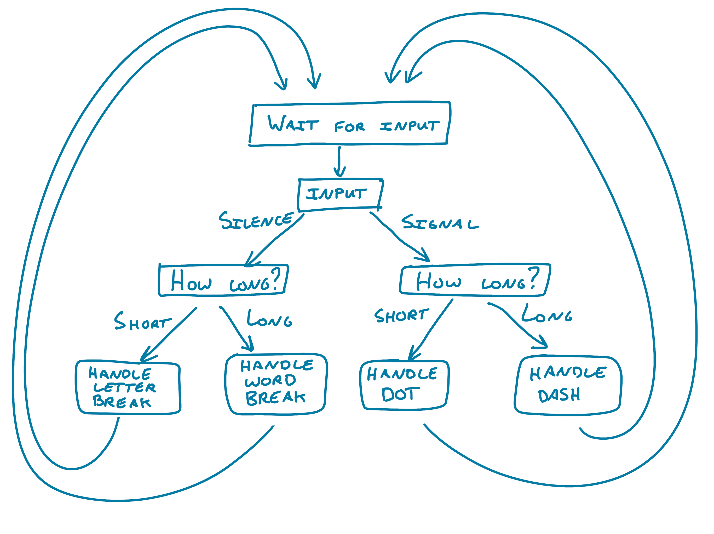
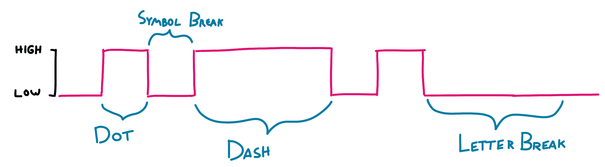
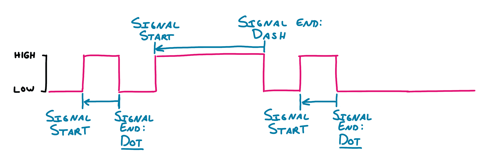
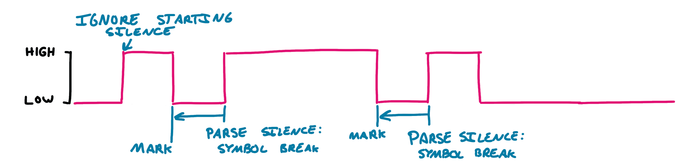
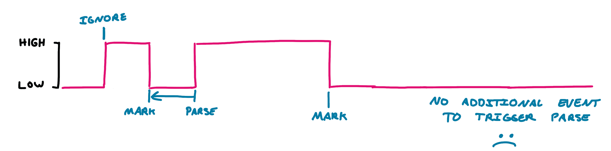
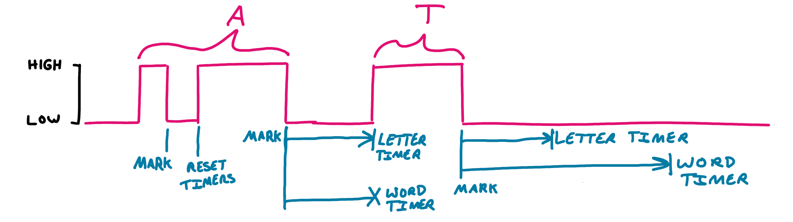
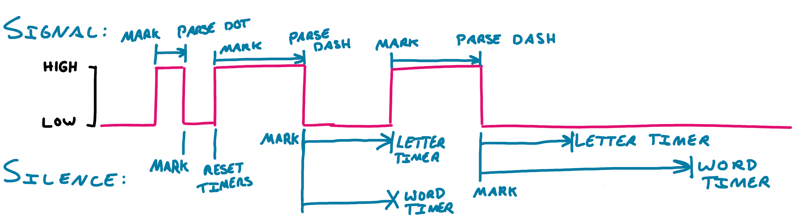

Writing Morse code games in JavaScript using the Web Audio API
Feb 12, 2022 · 4943 words · 24 minutes read
Last week, I posted a pair of games I made to play with Morse code in your browser. I wanted to take some time to describe how I made them and some of the challenges that came up along the way.
The first game is a listening game, where it plays the Morse code representation of a random target and you have to enter it in. The second game is a “speaking” game, where it gives you a random target string and you have to enter it in Morse code. The games include some options, including the speed that the Morse code plays (ranging from slow to fast for both the Farnsworth method and extending all times) and the difficulty (with the target ranging from a single letter to a number of words).
These games are written in vanilla JavaScript, and the source code is available here and here. It’s unpolished, but it works :)
Playing sound with the Web Audio API
The first thing that comes to mind for these games is the ability to play sound. You can do so many things with JavaScript, and luckily, this is one of them. The main interface for sound in the browser is the Web Audio API. I won’t go into too much detail about it here, but I highly recommend the MDN docs and the tutorials there for playing around with it.
For both of these games, I want to be able to play a single tone for a certain amount of time. The first step is playing the tone, and we can worry about the times later. One way to do this is to set up a new AudioContext (“an audio-processing graph built from audio modules linked together”) with an OscillatorNode (“an AudioNode audio-processing module that causes a given frequency of wave to be created”) and a GainNode (“an AudioNode audio-processing module that causes a given gain to be applied to the input data before its propagation to the output”) for controlling volume. Simply put, we’ll want to be able to create a tone at a certain frequency using the OscillatorNode, and we’ll want to start and stop the tone by adjusting the volume with the GainNode.
Before we do anything, we’ll need to initialize the AudioContext, add the nodes, and connect them to the context. We can set up the OscillatorNode with a frequency of 440hz, A, which is a reasonably pleasant Morse code tone. This might look something like the following:
const FREQUENCY = 440;
let note_context;
let note_node;
let gain_node;
let audioContextInitialized = false;
function initializeAudioContext() {
note_context = new AudioContext();
note_node = note_context.createOscillator();
gain_node = note_context.createGain();
note_node.frequency.value = FREQUENCY.toFixed(2);
gain_node.gain.value = 0;
note_node.connect(gain_node);
gain_node.connect(note_context.destination);
note_node.start();
audioContextInitialized = true;
}
With that audio context, we can then make functions for starting and stopping playing, which really adjust the gain value in the GainNode:
function startNotePlaying() {
// Pass a start time of 0 so it starts ramping up immediately.
gain_node.gain.setTargetAtTime(0.1, 0, 0.001)
}
function stopNotePlaying() {
// Pass a start time of 0 so it starts ramping down immediately.
gain_node.gain.setTargetAtTime(0, 0, 0.001)
}
Additionally, we’ll want to keep track of whether or not the audio context is initialized, so the first time we’re planning to play a sound we can initialize it if it hasn’t been already. As a side note, for mobile users, it’s important that this initialization is tied to a user action; we can’t just start playing sound without the user’s input (I know nothing about the code involved, but I’d bet this is why YouTube videos on mobile Safari are initially muted).
You can try these out with the following buttons:
Not too bad! The next step is being able to play them for a given amount of time, since Morse code is made up of short signals (dots) and longer signals (dashes). For this, we can do a subtle trick with JavaScript’s async and Promises. JavaScript doesn’t really have a sleep method, but we can simulate one by creating a Promise that resolves itself after a certain amount of time. We can then await that function in an async function; this will cause that async function to pause at that function call until the amount of time has passed. Because of JavaScript’s event loop, it isn’t an exact timing, but it’s close enough for this!
To play a note for a certain amount of time, we can start the note playing, wait for the given time, then stop playing the note. That could look something like the following:
// Times in milliseconds; note that Morse code dash time is 3 * dot time
var DOT_TIME = 60;
var DASH_TIME = DOT_TIME * 3;
function sleep(ms) {
return new Promise(resolve => setTimeout(resolve, ms));
}
async function playDash() {
startNotePlaying();
await sleep(DASH_TIME);
stopNotePlaying();
}
async function playDot() {
startNotePlaying();
await sleep(DOT_TIME);
stopNotePlaying();
}
You can try these out with the following buttons:
Playing Morse code
Morse code timing
Speaking of those time delays, let’s take a moment to look the timing of Morse code. The canonical ratios are as follows (from MorseCode.World):
The timing in Morse code is based around the length of one “dit” (or “dot” if you like). From the dit length we can derive the length of a “dah” (or “dash”) and the various pauses:
- Dit: 1 unit
- Dah: 3 units
- Intra-character space (the gap between dits and dahs within a character): 1 unit
- Inter-character space (the gap between the characters of a word): 3 units
- Word space (the gap between two words): 7 units
Or, in code:
var DOT_TIME = 60; // If our unit is 60ms.
var DASH_TIME = DOT_TIME * 3;
var SYMBOL_BREAK = DOT_TIME;
var LETTER_BREAK = DOT_TIME * 3;
var WORD_BREAK = DOT_TIME * 7;
Playing letters, words, and sentences
Using our async and sleep tricks from earlier, we can start to build higher order functions to play our Morse code letters. For a given character, we’ll want to play each symbol with a symbol break in between. We can write a playLetter function that takes in a letter’s Morse code representation (e.g. ".-." for "r") and plays it.
/**
* letter is something like '---'
*/
async function playLetter(letter) {
if (!audioContextInitialized) {
initializeAudioContext();
}
for (let i = 0; i < letter.length; i++) {
if (letter[i] == '-') {
await playDash(currentPlayCounter);
} else if (letter[i] == '.') {
await playDot(currentPlayCounter);
}
await sleep(SYMBOL_BREAK);
}
}
playLetter('.-.'); // "r" is ".-." in Morse code
We can then build this up one level higher, into playing a word. Now, we’ll want to play each letter, then wait for the duration of the letter break:
// Word is an array of letters as Morse code, like ['.', '.-', '-']
async function playWord(word) {
for (let i = 0; i < word.length; i++) {
await playLetter(word[i]);
await sleep(LETTER_BREAK);
}
}
playWord(['.', '.-', '-']); // "eat" is ". .- -" in Morse code
Finally, we can do one more higher order function to play a sentence, again reusing what we’ve already done. We’ll play each word, followed by a word break.
// Sentence is an array of words.
// Ex. "dog is good" -> [['-..', '---', '--.'], ['..', '...'], ['--.', '---', '---', '-..']]
async function playSentence(sentence, currentPlayCounter) {
for (let i = 0; i < sentence.length; i++) {
await playWord(sentence[i], currentPlayCounter);
await sleep(WORD_BREAK);
}
}
playSentence([['-..', '---', '--.'], ['..', '...'], ['--.', '---', '---', '-..']]); // "dog is good" in Morse code
Writing each word out in Morse code is pretty rough, though. We can write a translation layer to translate from a string (anything from a letter to a sentence) to the Morse code representation, starting with a map of letter to Morse:
const MORSE_MAP = {
'a': '.-',
'b': '-...',
'c': '-.-.',
'd': '-..',
'e': '.',
'f': '..-.',
'g': '--.',
'h': '....',
'i': '..',
'j': '.---',
'k': '-.-',
'l': '.-..',
'm': '--',
'n': '-.',
'o': '---',
'p': '.--.',
'q': '--.-',
'r': '.-.',
's': '...',
't': '-',
'u': '..-',
'v': '...-',
'w': '.--',
'x': '-..-',
'y': '-.--',
'z': '--..',
};
// asciiChar is something like 'd'
// Assumes [a-z0-9]
function convertAsciiCharToMorse(asciiChar) {
return MORSE_MAP[asciiChar];
}
// asciiWord is something like 'dog'
// Assumes [a-z0-9]
function convertAsciiWordToMorse(asciiWord) {
return asciiWord.split('').map(convertAsciiCharToMorse);
}
// asciiSentence is something like 'dog is good'
// Assumes words are separated by spaces.
function convertAsciiSentenceToMorse(asciiSentence) {
let splitSentence = asciiSentence.toLowerCase().split(' ');
return splitSentence.map(convertAsciiWordToMorse);
}
We can then use these higher order functions to translate our strings first.
let targetString = 'dog is good';
playSentence(convertAsciiSentenceToMorse(targetString));
With that, we’re able to play Morse code! We’ve built our playing up from playing a single tone for a duration to translating entire sentences and playing them.
Adjusting the speed
One of the things I wanted to do for these games was to make the speed adjustable, since it’s much easier to go slow when you’re first learning. This brought up an interesting question though: how should you slow down Morse code to learn?
My naive approach was to just adjust the dot value and keep the ratios all the same. This would (I presumed) give you plenty of time to listen carefully and learn.
Try out the following values with a very slow 300ms dot:
It turns out this isn’t actually helpful, since a large part of learning Morse code is being able to recognize and parse the sound of entire letters and words. If you slow everything down, you don’t build the familiarity with identifying the real sounds at the real speeds. Instead, there’s a technique called the Farnsworth method, where the individual letters are kept at the same speed, but the space between them varies. This gives you the benefit of hearing the letters at full speed with a longer break to process in between characters.
Thanks to the commenters on Hacker News for recommending this; I had never heard about it!
If we have some difficulty input, we can do something like the following to vary the spacing in between characters and words:
function updateSpeed(difficulty) {
// Get the difficulty and update the constants.
DOT_TIME = 60;
DASH_TIME = DOT_TIME * 3;
SYMBOL_BREAK = DOT_TIME;
let letterBreakMultiplier;
switch (difficulty) {
case 'easy':
letterBreakMultiplier = 24;
break;
case 'medium':
letterBreakMultiplier = 12;
break;
case 'hard':
letterBreakMultiplier = 6;
break;
default:
letterBreakMultiplier = 3;
break;
}
LETTER_BREAK = DOT_TIME * letterBreakMultiplier;
WORD_BREAK = DOT_TIME * (letterBreakMultiplier * 2.5);
}
Now, try listening to "eat" again, now with the Farnsworth method. Listen to how each letter is at full speed, but you have space to think in between!
With all of the playing and the timing figured out, we can now move to the games.
The Listening Game
Now that we have the ability to play an arbitrary phrase, ranging from one letter to complete sentences, we can use that to make the first game, the listening game. This game works as follows:
- Get a random target phrase depending on the difficulty
- Play the phrase
- Wait for the user to type it in
- If they get it, tell them and give option to play again
- If not, play the sound again
First, let’s look at how we’d get a random target. Let’s say we have an input with a few different radio buttons:
function getTarget(difficulty) {
// Get the difficulty and assign a random target.
let target;
switch (difficulty) {
case 'easy':
target = getRandomLetter();
break;
case 'medium':
target = getRandomWord();
break;
case 'hard':
target = getRandomEasyWords();
break;
default:
target = getRandomWords();
break;
}
return target;
}
That’s not too bad! We just have to implement those child functions:
// Note: in the game, EASY_WORDS and ALL_WORDS are long arrays of strings.
// Here are a Shown here for example.
const EASY_WORDS = ['cat', 'ate', 'dog'];
const ALL_WORDS = ['cat', 'ate', 'dog', 'interest', 'complexity'];
function getRandomLetter() {
const randomIndex = Math.floor(Math.random() * 26);
return Object.keys(MORSE_MAP)[randomIndex];
}
function getRandomWord() {
const randomIndex = Math.floor(Math.random() * EASY_WORDS.length);
return EASY_WORDS[randomIndex];
}
function getRandomEasyWords() {
const totalLength = Math.floor(Math.random() * 3) + 2;
let finalSentence = ''
for (let i = 0; i < totalLength; i++) {
finalSentence += EASY_WORDS[Math.floor(Math.random() * EASY_WORDS.length)];
if (i < totalLength - 1) {
finalSentence += ' ';
}
}
return finalSentence;
}
function getRandomWords() {
const totalLength = Math.floor(Math.random() * 4) + 2;
let finalSentence = ''
for (let i = 0; i < totalLength; i++) {
finalSentence += ALL_WORDS[Math.floor(Math.random() * ALL_WORDS.length)];
if (i < totalLength - 1) {
finalSentence += ' ';
}
}
return finalSentence;
}
With these in hand, we can write the basic game functions:
// The listening game
let target = '';
function startGame() {
// Initialize audio context if it isn't already
if (!audioContextInitialized) {
initializeAudioContext();
}
// Get a random target, assume we're on medium mode
target = getTarget('medium');
// Play the target phrase
playTarget();
}
function playTarget() {
playSentence(convertAsciiSentenceToMorse(target));
}
function guess(enteredGuess) {
if (enteredWord == target) {
console.log('Correct! call `startGame()` to play again.');
} else {
console.log('Not quite! Try again.');
playTarget();
}
}
That’s the main functionality right there! You can actually play this minimal version in your console on this page:

All that’s left to do with this is to clean it up and hook it up to the user input (buttons and keyboard shortcuts) — since that’s mostly event listeners, I’m omitting it here, but you can see the full source here; look for the ListeningGame class.
Replaying the target
One subtle thing that came up with this game is how to allow the user to replay the target phrase, and mostly what would happen if they tried to replay it before the playthrough was finished.
I initially tried to manage this with a global STOPPED variable and a few checks; if the playSentence function saw that everything was stopped, it wouldn’t try to play any more. This quickly ran into problems related to the different sleeps I have in there: since I set it up so that a new playthrough would set STOPPED to false, this meant it could be reset while the earlier playSentence was still sleeping, leading to the original playthrough still continuing. This meant that two playthroughs would play at the same time, which quickly led to a terribly messing sounding audio.
I ended up fixing this by introducing a monotonically increasing playthrough counter global variable and introducing an invariant that only the most recent playthrough can be played. By incrementing this variable when a playthrough is initiated and passing the value to the child play calls, each child function can perform a check if its passed playthrough ID still matches the global current playthrough ID; if not, it means that there’s a newer playthrough and the current one should be discarded.
This looked something like this:
// Global strictly increasing play counter to avoid multiple replays at the same time.
var playCounter = 0;
async function playDash(currentPlayCounter) {
if (currentPlayCounter != playCounter) { return; } // New line to short circuit if out of date
... rest of function
}
async function playDot(currentPlayCounter) {
if (currentPlayCounter != playCounter) { return; } // New line to short circuit if out of date
... rest of function
}
async function playLetter(letter, currentPlayCounter) {
if (!audioContextInitialized) {
initializeAudioContext();
}
for (let i = 0; i < letter.length; i++) {
if (currentPlayCounter != playCounter) { return; }
... rest of function
}
}
async function playWord(word, currentPlayCounter) {
for (let i = 0; i < word.length; i++) {
if (currentPlayCounter != playCounter) { return; }
... rest of function
}
}
async function playSentence(sentence, currentPlayCounter) {
if (currentPlayCounter != playCounter) { return; }
... rest of function
}
playTarget() {
playCounter += 1;
playSentence(convertAsciiSentenceToMorse(this.target), playCounter);
}
This way, if playTarget was called again, the new playthrough would supersede the old one, and the old one would stop. Not the most elegant, but it removed the duplicate plays!
(Thanks to sirmarksalot on Hacker News for pointing out this bug!)
The “Speaking” game
The second game was a little trickier to write, as it’s much more dynamic than the first one. It requires the player to input the Morse code representation of a given target (again, depending on the difficulty, ranging from a single letter to a whole sentence).
You can imagine the rough steps are like this:
- Get a random target phrase depending on the difficulty
- Listen for user inputs
- Translate user input into signals and pauses
- Translate signals and pauses into letters and words
- Check if the user input the target correctly
Much more of a dynamic problem!
Parsing the incoming signal into Morse code
For an initial consideration, we can imagine just the part of parsing user signals. Since we’d be constructing letters from symbols, we can approach it like other “build up as we go” problems and use a short stack to keep track of what we’ve seen so far. Let’s imagine it going left to right, since that’s how we’d read it in English, and let’s imagine a user inputting "r", which in Morse code is ".-.".

At some point, we’ll process the symbols on the stack (more on that later) into a letter. We’ll want to build the letters up over time, so we can imagine another stack of letters:

If we’re dealing with sentences, you could imagine there being an additional stack for the words, too.
Like any interesting stack, the real question is when to read from it. This is where the pauses and silences come into play. Earlier we talked about the ratios for the pauses (the SYMBOL_BREAK, LETTER_BREAK, and WORD_BREAK from earlier). We can abstract away the actual input and imagine a decision tree like the following:

That gives us four events to handle: handleDot, handleDash, handleLetterBreak, and handleWordBreak. With our stacks from earlier, those could do the following, where we parse the symbol stack in handleLetterBreak and the letter stack in handleWordBreak:
let symbolStack = [];
let letterStack = [];
let wordStack = [];
function handleDot() {
symbolStack.push('.');
}
function handleDash() {
symbolStack.push('-');
}
function handleLetterBreak() {
const letterAsMorse = symbolStack.join('');
// Assume we have a mapping of Morse:letter,
// the reverse of the earlier MORSE_MAP
const letter = lookUpMorse(letterAsMorse);
letterStack.push(letter);
// Clear the symbol stack.
symbolStack = [];
}
function handleWordBreak() {
const word = letterStack.join('');
wordStack.push(word);
// Clear the word stack.
wordStack = [];
}
This looks pretty good. We’ll be incrementally building up our inputs as we see them, from symbol all the way up to words, pushing to stacks and parsing them when appropriate. Now, how do we translate user input into these chunks?
Let’s start by imagining our signal as an electrical signal (much like our oscillation from before) as a square wave, to make it easy to see. Let’s say we have "r" as an input.

Parsing the high signal seems pretty easy, as we can just look at the time when the signal starts and the time when the signal stops. We can say it’s a dot if it’s shorter than a DASH_TIME, and if it’s longer, then it’s clearly a dash.Since humans aren’t perfect, we can be a little generous about the time.
let signalStartTime = 0;
function handleSignalStart() {
signalStartTime = Date.now();
}
function handleSignalEnd() {
// How long was this signal?
let timeDelta = Date.now() - signalStartTime;
if (timeDelta < DASH_TIME) {
handleDot();
} else {
handleDash();
}
}
If we tie these in to the points where the signal starts and stops, we can parse input into dots and dashes.

Now, how can we parse the silences? One initial approach could be to look backwards whenever a signal starts. Silence is the absence of signal, and every time a signal starts, we can look to see how long it has been since the last signal ended. This is the pause between signals, and we can parse it appropriately. We can even ignore the first silent section, since we don’t want a leading space before any input.
To add to the previous code, we now need to also keep track of the timestamp when the signal ended.
let signalStartTime = 0;
let signalEndTime = 0;
function handleSignalStart() {
let currentTime = Date.now();
// Keep track of signal start time as before.
signalStartTime = currentTime;
// Now, calculate how long that silence was.
let silenceTimeDelta = currentTime - signalEndTime;
if (signalEndTime == 0) {
// This is the first silence and we can ignore it.
} else if (silenceTimeDelta < LETTER_BREAK) {
// This is just a symbol break and we can ignore it.
} else if (silenceTimeDelta < WORD_BREAK) {
// Anything more than a letter break and less than a word break counts
// as a letter break.
handleLetterBreak();
} else {
// We have a word break!
handleWordBreak();
}
}
function handleSignalEnd() {
let currentTime = Date.now();
// How long was this signal? Calculate delta as before
let timeDelta = currentTime - signalStartTime;
if (timeDelta < DASH_TIME) {
handleDot();
} else {
handleDash();
}
// We also need to mark the timestamp that this signal ended.
signalEndTime = currentTime;
}
Now, our parsing for "r" will look like this:

Close, but there’s a problem. If we’re relying on a new signal to know when the current silence is done, what if we don’t get a new signal? If the player has entered the last symbol, we should be able to automatically know that enough time has passed for a letter break. Additionally, if we’re dynamically processing the user’s input, we should be able to show it to them as it’s parsed. If we have to wait for the next signal to know that the current symbol is done, there would be a weird effect where you’d only see the current letter once you start the signal for the next letter.
For example, what if the player had to input "a"?

We need a way to proactively parse the input when enough time has passed. Instead of the backwards-looking approach above, we can instead use a forward looking approach. When we see a signal end, we can start two timers: one the for time period of a letter break, and one for the time period of a word break. When these timers go off, if we haven’t seen a new signal, we’ll know that we can handle the letter breaks and word breaks appropriately. If we do see a signal, we can just cancel the timers. This also allows us to show the parsed input to the user as soon as it has been parsed, which feels much more responsive.
Now, when a user inputs the word "at", we can proactively handle the silence.

To do this in the code, we can use a combination of creating timeouts and clearing them as we need to.
let signalStartTime = 0;
// Timeout IDs we'll keep around so we can clear them when needed.
let letterTimeout = null;
let wordTimeout = null;
function handleSignalStart() {
signalStartTime = Date.now();
// We also want to clear any pending silence timeouts.
clearTimeout(letterTimeout);
clearTimeout(spaceTimeout);
}
function handleSignalEnd() {
// How long was this signal?
let timeDelta = Date.now() - signalStartTime;
if (timeDelta < DASH_TIME) {
handleDot();
} else {
handleDash();
}
// Start the timeouts
letterTimeout = setTimeout(handleLetterBreak, LETTER_BREAK);
wordTimeout = setTimeout(handleWordbreak, WORD_BREAK);
}
Now that we have this, we can put it all together:

That’s really the hard part.
Hooking it up to user input
To make this feel dynamic, we can hook up the handleSignalStart function to run on keyDown for the spacebar and mousedown/touchstart on the Tap button and the handleSignalEnd function to run on keyUp for the spacebar and mouseup/touchend on the Tap button.
To make it feel real, we want to play a tone when the user is pressing down on those inputs. Since we did all of the tone playing before, all we have to do is add a simple call to startNotePlaying in handleSignalStart and the corresponding stopNotePlaying in handleSignalEnd.
The last step is adding a similar flow to the first game, where we generate a target, listen and parse input, and check if it matches. All that’s left to do with this is to clean it up, add a little more functionality for clearing, and hook it up to the user input (buttons and keyboard shortcuts) — since that’s mostly event listeners, I’m again omitting it here, but you can see the full source here; look for the InputGame class.
Finishing thoughts
I also cleaned up the games and put them in classes to keep things a little more cleanly separated. I also spent some time on some nice-to-haves, like auto-focusing on the text input when the first game starts and keyboard shortcuts to clear/reset.
You can play the games here and see the full source code here and here.
Feel free to reach out if you have any questions about this, and happy coding!